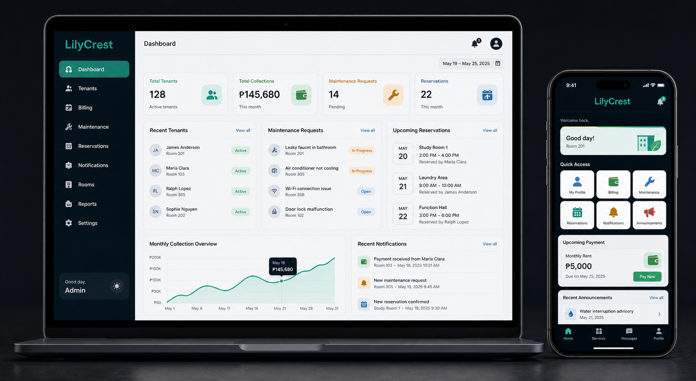
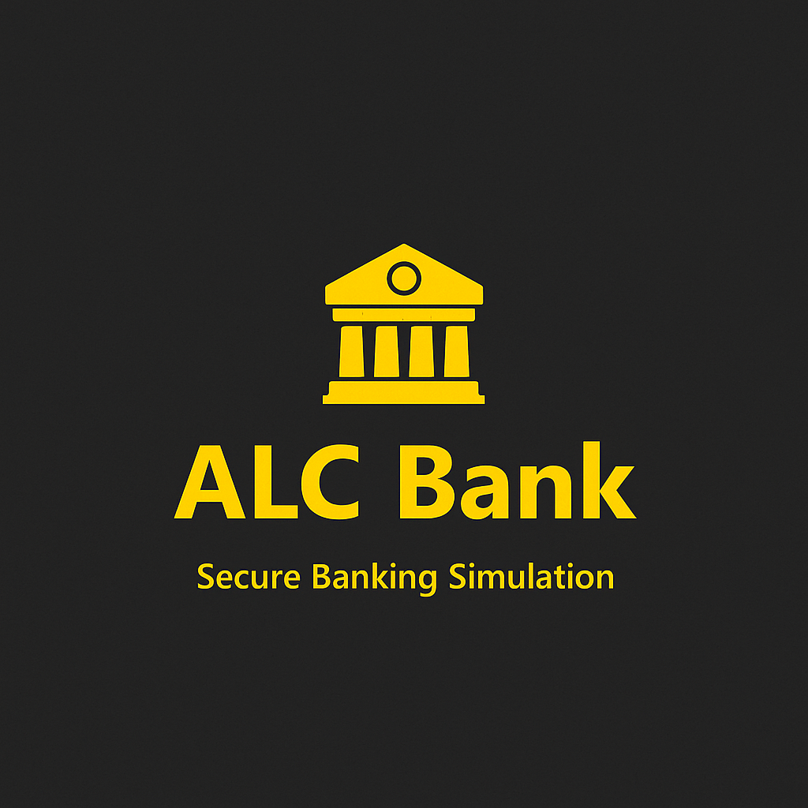
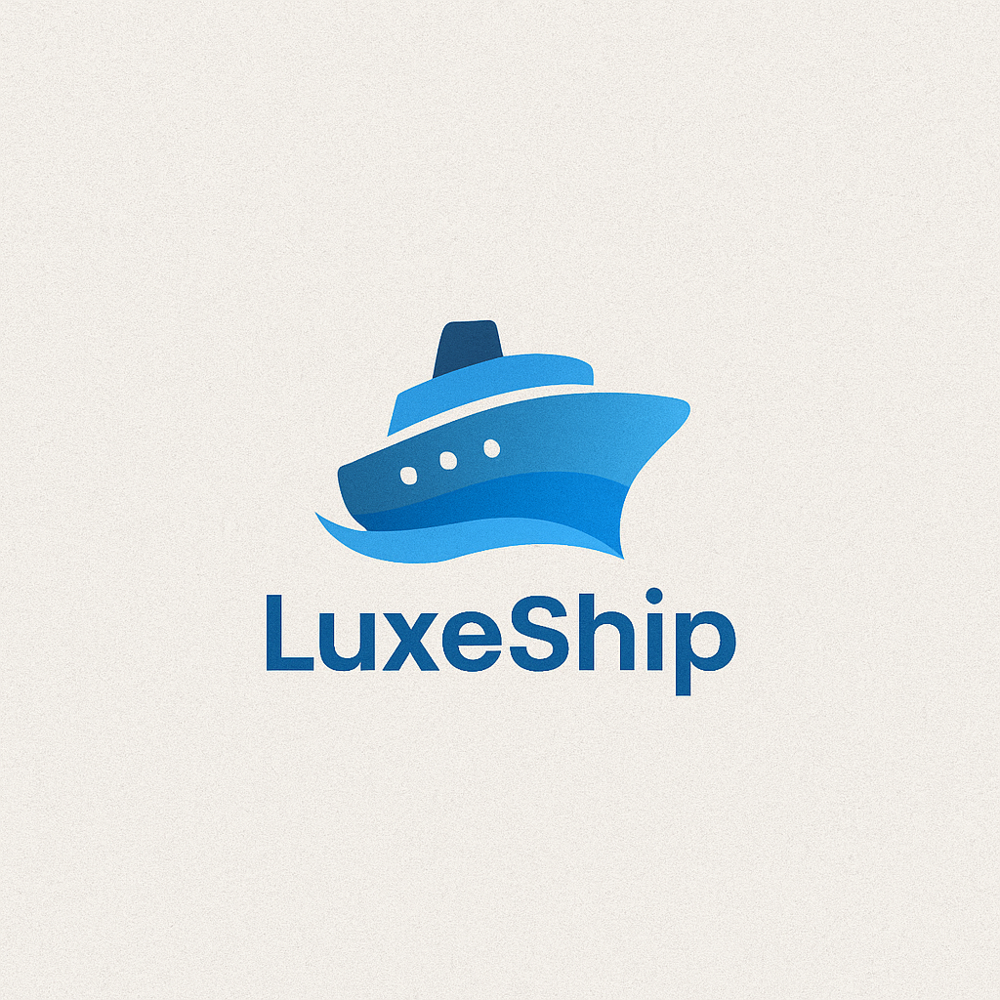
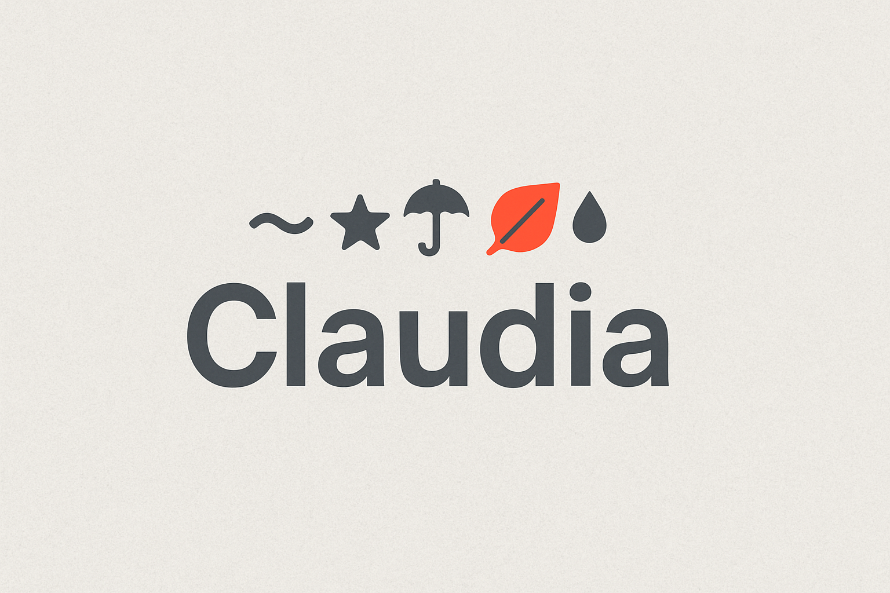
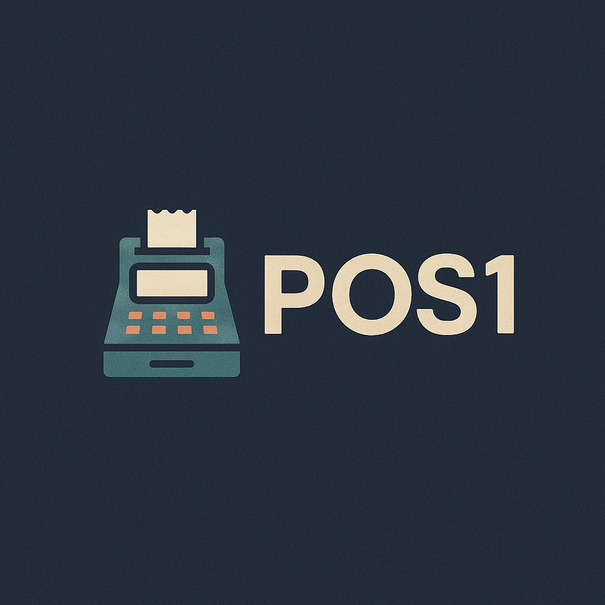

Featured concept
LilyCrest Property Management
A responsive property-management experience that brings tenant records, billing, maintenance requests, reservations, and reporting into one clear system.
Explore ProjectAspiring IT Business Analyst | BSIT Student | Systems, Data & QA Documentation
I am a 4th-year BSIT student interested in entry-level IT Business Analyst, Business Analyst, Systems Analyst, QA Analyst, and Data Analyst roles. My portfolio focuses on academic projects where I practiced requirements gathering, process understanding, database documentation, manual review, and clear project outputs.
Selected projects
A selection of academic and concept projects covering property management, transaction processing, booking, and responsive web experiences.

Featured concept
A responsive property-management experience that brings tenant records, billing, maintenance requests, reservations, and reporting into one clear system.
Explore Project
Banking system
Login validation, deposits, withdrawals, balance checks, and receipt generation.
View project
Booking system
Passenger details, class selection, validation, booking summaries, and QR receipts.
View project
Responsive website
A focus timer, task list, ambient sounds, animated visuals, and dark mode.
View project
Desktop application
Inventory updates, transaction processing, login validation, and receipt generation.
View demoFeatured case study
A system analysis and database documentation project focused on organizing campus event information, participants, schedules, approvals, and event-related records.
Students, organizers, administrators
Events, schedules, participants, approvals
System overview, workflow notes, database planning
This project shows how I approach a system from an analyst perspective: identifying users, defining the purpose of the system, outlining records needed, and organizing documentation that can guide development.
Core skills
Problem statements, user needs, process flow understanding, requirements notes, and system purpose documentation.
Basic SQL concepts, CRUD understanding, entity and field planning, research summaries, and organized data outputs.
Manual review, revision tracking, feature documentation, test observations, and clear communication of issues.